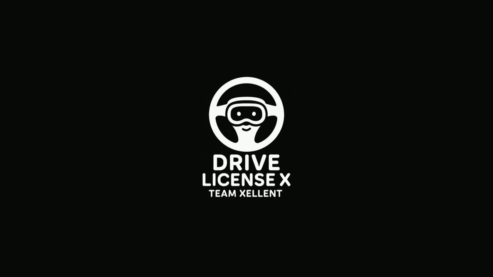

/
DriveLicense XDriveLicense X
교통법규를 읽는 것에서 경험하는 것으로.From reading traffic rules to experiencing them.

프로젝트 개요 · 참여Overview & contribution
운전면허 필기시험을 VR 시뮬레이션으로 전환하는 서비스 제안. 사용자 경험 리서치와 인터뷰 분석을 통해 요구를 도출하고 UX를 설계했습니다.A service concept translating the driving-license written test into a VR simulation. I conducted user research and interview analysis to identify needs and design the experience.
구현과 접근Approach & implementation
교통법규 이해, 신호 인식, 돌발상황 대응을 경험 기반으로 평가하는 방향을 제안했습니다.The concept explores experience-based assessment of traffic-rule understanding, signal recognition, and responses to unexpected situations.